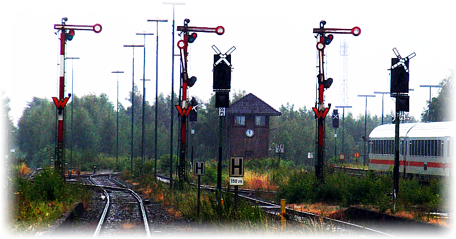

Signalbuch-Online
Hauptsignale (Hp)
Geltung der Hp-Signale:
Das Signal Hp 0 gilt für Zug- und Rangierfahrten.
Die Signale Hp 1 und Hp 2 gelten nur für Zugfahrten.
INFO
Allgemeines
Allgemeine Bestimmungen für Hauptsignale (Hp)
Hp 0
Signal Hp 0
Halt.
Hp 1
Signal Hp 1
Fahrt.
Hp 2
Signal Hp 2
Langsamfahrt.
